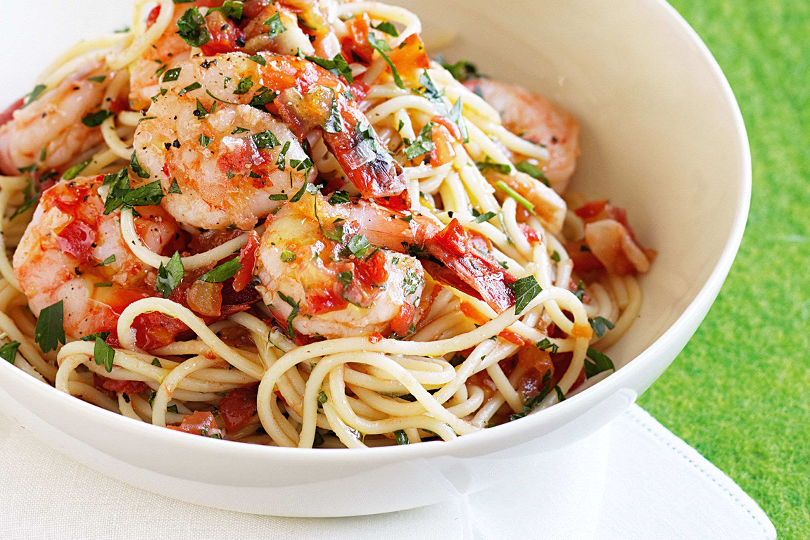

Chilli Prawn Pasta Recipe

Description
This recipe combines prawns, linquine, chilli and parmesan
Ingredients
- Prawns 200g
- linquine 500g
- One red chilli, finely diced
- One Garlic Bulb, minced
- One Shallot, finely diced
- 2 tbsp Butter unsalted
- 150ml White Wine
- Parmesan Cheese grated
- 250g Cherry Tomatoes
Steps
- Add butter to hot pan and fry prawns until pink, then remove to seperate plate
- Meanwhile, boil a pot of salted water and add linquine to the pot
- To the same pan where the prawns cooked, add shallots and chilli and cook until soft and fragrant
- Add white wine to the pan and reduce to simmer, add tomatoes and cook until halfway reduced
- Once pasta has finished cooking, add to the pan with a splash of pasta water
- Cook for another two minutes and then plate, garnishing with Parmesan